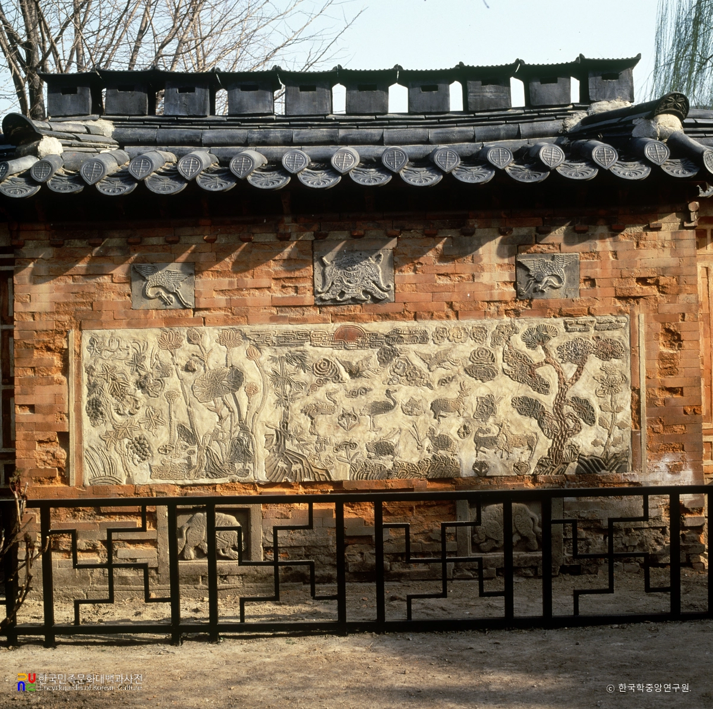
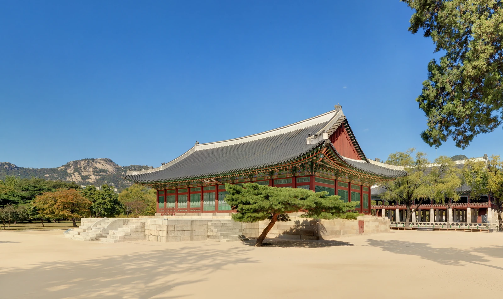

궁금한 궁 / UI 배치 검토 / 2026.10.17
하나의 앱 안에서 자유롭게 탐색하기
시나리오는 관찰할 과제와 순서를 정한다. 앱은 같은 홈·검색·사진 탐색·설명 화면을 계속 사용하며, 사용자가 원하는 곳으로 이동한다. 아래는 네 검토를 받기 위한 화면 배치 제안이다.
검토한 배치의 정적 기록. 2026-10-17 사용자 구현 요청에 따라 실제 앱에 적용했다. 이 문서의 버튼·검색창은 배치 그림이며 실제 동작은 프로토타입 앱에서 확인한다.
설명 다음같은 사진 다시 보기 · 새 대상 검색 · 다음 관람 제안 · 종료
01. 홈 — 검색과 사진 탐색을 바로 시작
주 탐색 80 : 보조 호기심 20을 목표로 둔다. 상단 검색·대표 콘텐츠·주 행동을 중심으로, 아래에는 작은 사진과 문구의 보조 경로를 둔다.
그냥 지나치기엔
궁금한 것들.
이 건물은 어떤 곳일까요?
작은 문양에는 어떤 뜻이 담겼을까요?
잠깐, 이런 것도 있어요

이 벽에는 어떤 소망을 새겼을까요?
더 알아보기02. 검색 — 이름·관심 단어로 탐색
이름을 아는 경우에도 사용할 입구를 마련한다. 검색은 준비된 콘텐츠 안에서 동작하도록 제안하며 자유 질문 답변과 구분한다.
무엇이 궁금한가요?
이름을 알면 검색하고,
이름을 모르면 사진으로 찾아보세요.
둘러볼 수 있는 곳
연못 안의 누각
건물과 앞마당 살펴보기
검색어를 입력한 상태의 배치 예시 · “바닥”
이 바닥은 왜 이렇게 되어 있을까요?
결과가 없을 때: “아직 준비된 설명이 없어요.”
다른 단어로 검색 / 사진으로 찾아보기
03. 사진으로 찾기 — 시나리오 선택 없이 진입
모든 화면의 사진 탐색 입구를 하나로 모은다. 촬영을 대신하는 예시 사진을 자유롭게 고르고, 해당 사진에서 전체·부분·후보를 확인한다.
눈앞의 무엇이
궁금한가요?
건물 전체도, 작은 문양도 살펴보세요.
이번 프로토타입은 촬영 대신
준비된 사진을 사용해요.
준비된 사진
사진을 고른 뒤 궁금한 부분을 선택해요.
다른 사진으로 언제든 바꿀 수 있어요.
04. 설명 — 뒤로가기와 다음 탐색을 유지
왼쪽 위 뒤로가기는 실제 직전 화면으로 돌아간다. 검색어·선택·스크롤을 유지하고, 설명을 읽은 자리에서 새 탐색을 시작할 수 있게 한다.
선택한 곳 알아보기
경회루
경회루는 연못 안에 세운 누각이에요. 나라에 경사가 있을 때 연회를 열던 곳이에요.
더 읽기 · 설명 및 사진 출처이 근처에서 이어서 볼까요?

수정전
연못 남쪽의 긴 전각에서는 어떤 나랏일을 했을까요?
살펴보기사진 선택 다음 화면의 배치
전체·부분 선택: 상단 뒤로 / 제목 / 검색 → 선택한 사진(전체가 보이게, 확대 가능) → 고른 부분의 미리보기·확인 → 건물 전체 알아보기 → 글로 대상 고르기. 하단 이동은 유지한다. 아직 아무것도 고르지 않았다면 정답 표시를 미리 그리지 않는다.
후보 확인: 상단 뒤로 / 제목 / 검색 → 알아보는 사진 → 후보별 참고 사진·이름·구별 근거·선택 → 둘 다 아닌 것 같아요 / 사진 다시 보기. 선택 후에도 뒤로 또는 후보 재비교로 수정한다. 후보가 필요한 사진에서만 보이며, 일반 탐색을 가로막지 않는다.
위 두 화면의 세부 시안은 이 4개 기본 화면의 배치 검토에 맞춰 함께 다듬는다. 아직 확정된 명세가 아니다.
먼저 검토받을 배치와 이동 규칙
- 홈 상단 검색창: 건물 이름·문양·바닥 같은 단어로 준비된 자료를 찾는다. 카메라 아이콘은 사진 탐색으로 간다.
- 주 탐색 80 : 보조 호기심 20: 공통 헤더·하단 이동을 제외한 첫 화면 콘텐츠의 대략적인 비중이다. ‘잠깐, 이런 것도 있어요’는 작은 제목·88×88px 사진·14px 문구의 가로 구성으로 줄이고 전체 높이는 약 130px를 목표로 한다. 글자가 커지거나 문구가 길어지면 높이는 자연스럽게 늘린다. 비율을 맞추려고 텍스트를 자르지 않는다.
- 하단 세 입구: 홈 / 검색 / 사진으로 찾기. 모든 주요 화면에서 유지하고 작은 화면에서도 조작부를 가리지 않게 배치한다. 이 세 개가 중복되거나 복잡한지는 검토받는다.
- 뒤로가기: 검색에서 열었으면 검색 결과로, 사진에서 열었으면 사진 선택으로 돌아간다. 설명에서 갑자기 홈으로 보내지 않는다. 뒤로 갈 화면이 없는 직접 진입은 홈으로 안전하게 연결한다.
- 기존 홈 디자인: 사진형 홈을 위에 표시했다. 3D형도 같은 검색창·하단 이동을 사용하고 대표 사진 자리만 궁궐 이야기로 바꾼다. 승인 전 새 3D·유리 효과를 구현하지 않는다.
- 설명 이후: 같은 사진의 다른 부분 / 새 검색·사진 탐색 / 다음 관람 제안을 선택한다. 지원 부분이 없는 사진에는 ‘다른 부분 보기’를 숨긴다.
- 시나리오: 같은 앱에서 건물 찾기 → 부분 탐색 → 호기심 카드 → 후보 확인 → 다음 탐색 과제를 순서대로 관찰한다. 과제 순서가 앱의 사진·기능·이동을 잠그지 않는다. 사전 노출이 있었다면 관찰 기록에 남긴다.
이 문서는 배치 검토 기록이다. 현재 앱은 자유 탐색·준비된 자료 검색·스포카 한 산스를 적용하며 실제 사용성 관찰은 별도로 진행한다.